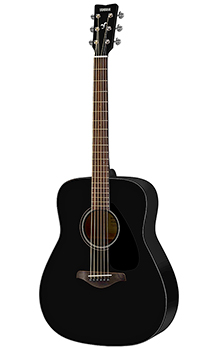
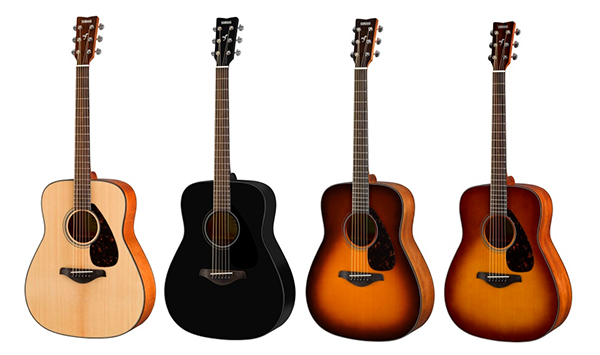

YAMAHA FG800 представляет собой акустическую шестиструнную гитару без звукоснимателя. Инструмент прекрасно подойдёт для гитаристов, играющих самую разную музыку, начиная от несложных ритмов, заканчивая современными композициями. Форма деки гитары — традиционный вестерн. Гитара под правую руку. YAMAHA традиционно предлагает любителям гитары инструменты премиального качества, которые одинаково хорошо звучат в акустическом исполнении и при озвучивании инструментальным микрофоном. Инструмент представлен в категории гитар полупрофессионального уровня.
Yamaha FG800
Описание товара
Характеристики товара
| Внешний вид | |
| Форма корпуса: | вестерн |
| Отделка корпуса: | глянцевая |
| Окантовака грифа: | матовая |
| Окантовка: | черная |
| Цвета: | Черный |
| натуральный | |
| санбёрст | |
| Размеры | |
| Мензура: | 650 мм |
| Радиус накладки: | 400 мм |
| Ширина верхнего порожка: | 43 мм |
| Длина корпуса: | 505 мм |
| Ширина корпуса: | 412 мм |
| Глубина: | 100-118 мм |
| Общая длина: | 1038 мм |
| Фурнитура | |
| Колки: | литые, хром 3+3 |
| Струны: | D’Dario .009-.042 |
| Количество ладов: | 21 |
| Анкерный стержень: | нет |
| Материалы | |
| Задняя дека: | нато/окуме |
| Обечайка: | нато/окуме |
| Верхняя дека: | массив Ели |
| Гриф: | нато |
| Накладка грифа: | палисандр |
| Бридж: | палисандр |
Подробное описание товара
FG800 — стандартная акустическая модель с простым и традиционным
внешним видом, превосходного качества и по доступной цене. Аутентичное
звучание отлично сбалансировано, а благодаря новому дизайну распорки, сама
гитара достаточно прочная, и тем самым ее можно с уверенностью
рекомендовать всем начинающим гитаристам.

Традиционный корпус вестерн
Верхняя дека из массива ели
Нижняя дека и обечайки нато/окуме
Новый дизайн распорки
Традиционный внешний вид и превосходное качество
Множество различных цветов.

Благодаря передовой технологии акустического анализа, разработанной Yamaha R&D, новые FG гитары имеют более громкое и сильное звучание в низко- и среднечастотном диапазоне. Это звучание достигнуто инженерами путем анализа и моделирования лучшего дизайна распорки, не полагаясь на традиции и догадки. Этот анализ привел к созданию нового образца распорки с новой и идеальной акустической структурой, которая обеспечивает прочность верхней деке и при этом позволяет гитаре звучать лучше. В каждом аспекте FG гитар заложено мастерство создания лучших гитар более 50 лет.